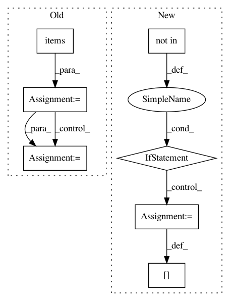

cc6085567559b008c831d07fcb7c1f53bea9a699,coremltools/converters/nnssa/frontend/tensorflow/load.py,,load,#Any#Any#,13
Before Change
ssa = graphdef_to_ssa(gd)
placeholder_shape = kwargs.get("placeholder_shape", {})
for k, v in placeholder_shape.items():
assert (k in ssa.functions["main"].graph)
ssa.functions["main"].graph[k].tfattr["_output_shapes"] = [v]
passes = [
delete_asserts, functionalize_loops, constant_propagation, cond_to_where,
remove_variable_nodes, fusedbatchnorm_rewrite, lstmblockcell_rewrite
]
After Change
required_plhd_nodes = [node for node in graph if
graph[node].op == "Placeholder"]
for name in required_plhd_nodes:
if name not in placeholder_shape:
raise ValueError("Shape of required input {} is not provided.".format(name))
graph[name].attr["_output_shapes"] = [placeholder_shape[name]]
passes = [
delete_asserts, functionalize_loops, constant_propagation,
cond_to_where, remove_variable_nodes, fusedbatchnorm_rewrite,
In pattern: SUPERPATTERN
Frequency: 3
Non-data size: 7
Instances
Project Name: apple/coremltools
Commit Name: cc6085567559b008c831d07fcb7c1f53bea9a699
Time: 2019-08-30
Author: shuoxin_lin@apple.com
File Name: coremltools/converters/nnssa/frontend/tensorflow/load.py
Class Name:
Method Name: load
Project Name: aws/sagemaker-python-sdk
Commit Name: f76f8a8b17fa38f69a95b8af6475c39b81d7ad7e
Time: 2020-04-08
Author: 6631887+laurenyu@users.noreply.github.com
File Name: src/sagemaker/sklearn/estimator.py
Class Name: SKLearn
Method Name: create_model
Project Name: facebookresearch/Horizon
Commit Name: 9cf8f6cdf6a2008843cb37da6e34b8d10353b0bf
Time: 2019-12-12
Author: kittipat@fb.com
File Name: ml/rl/preprocessing/sparse_to_dense.py
Class Name: PythonSparseToDenseProcessor
Method Name: process